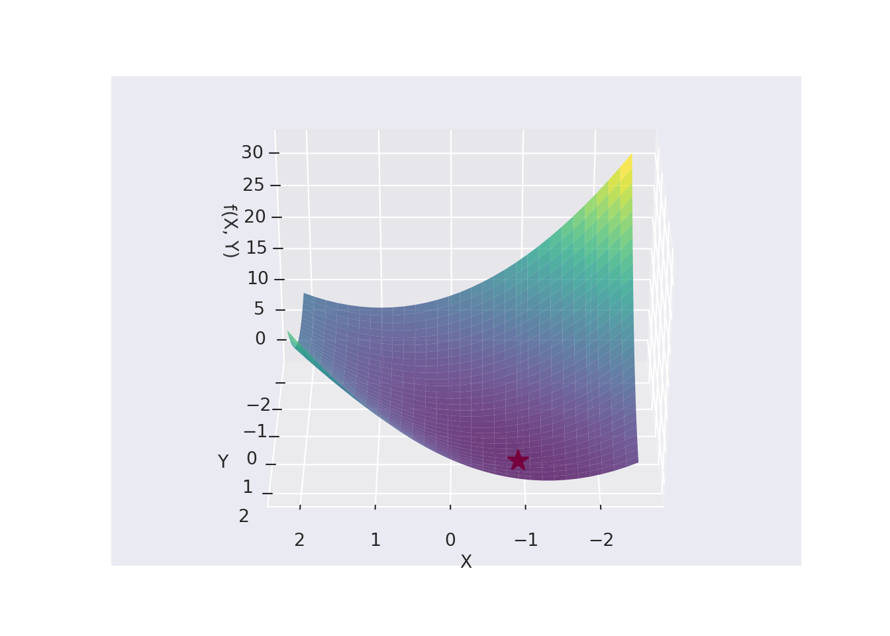
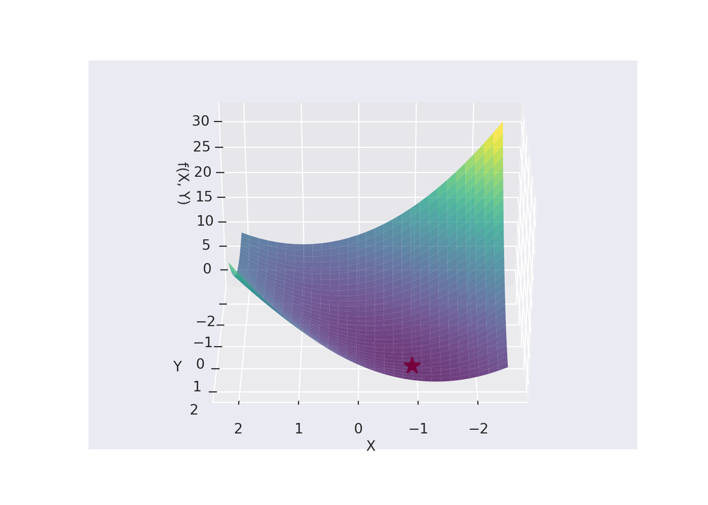

Chapter 8 Direct Search Methods for Unconstrained Optimisation
Direct search methods, unlike the Descent methods discussed in earlier Chapters do not require the derivatives of the function. The Direct search methods require only the objective function values when finding minima and are often known as zeroth-order methods since they use the zeroth-order derivatives of the function. We will consider two Direct Methods in this course. Namely, the Random Walk Method and the Downhill Simplex Method.
8.1 Random Walk Method
The random walk method is based on generating a sequence of improved approximations to a minimum, where each approximation is derived from the previous approximation. Therefore, \(\mathbf{x}_i\) is the approximation to the minimum obtained in the \((i - 1)\)th iteration, yielding the relation: \[ \mathbf{x}_{i + 1} = \mathbf{x}_i + \lambda \mathbf{u}_i, \] where \(\lambda\) is some scalar step length and \(\mathbf{u}_i\) some random unit vector generated at the \(i\)th stage.
We can describe the algorithm as follows:
- Start with an initial point \(\mathbf{x}_1\), a sufficiently large initial step length \(\lambda\), a minimum allowable step length \(\epsilon\), and a maximum permissible number of iterations \(N\).
- Find the function value \(f_1 = f(\mathbf{x}_1)\).
- Set the iteration number, \(i\), to 1
- Generate a set of \(n\) random numbers, \(r_1, \ldots, r_n\), each lying in the interval \([-1, 1]\) and formulate the unit vector \(\mathbf{u}\) as: \[ \mathbf{u} = \dfrac{1}{(r_1^2 + r_2^2 + \ldots + r_n^2)^{1/2}}\begin{bmatrix} r_1 \\ r_2 \\ \vdots \\ r_n \end{bmatrix}. \] To avoid bias in the calculation, we only accept the vector if the length of: \[\dfrac{1}{(r_1^2 + r_2^2 + \ldots + r_n^2)^{1/2}}\ \text{is}\ \leq 1.\]
- Compute the new vector and the corresponding function value \(\mathbf{x} = \mathbf{x}_1 + \lambda \mathbf{u}\) and \(f = f(\mathbf{x})\).
- If \(f < f_1\), then set the new values of \(\mathbf{x}_1 = \mathbf{x}\) and \(f_1 = f\) and go to step 3, else continue to 7.
- If \(i \leq N\), set the new iteration to \(i + 1\) and go to step 4. Otherwise, if \(i > N\), go to step 8.
- Compute new, reduced, step length as \(\lambda = \lambda /2\). If new step length is smaller than or equal to \(\epsilon\), then go to step 9, else go to step 4.
- Stop the procedure by taking \(\mathbf{x}_\text{opt} = \mathbf{x}_1\) and \(f_\text{opt} = f_1\).
8.1.0.1 Example
Minimise \(f(x_1, x_2) = x_1 - x_2 + 2x_1^2 + 2x_1x_2 + x_2^2\) using the random walk method. Begin with the initial point \(x_0 = [0, 0]\) and a starting step length of \(\lambda = 1\). Use \(\epsilon\) = 0.05 and iteration limit \(N = 100\)
f = lambda x1, x2: x1 - x2 + 2*x1**2 + 2*x1*x2 + x2**2
x0 = np.array([0, 0])
lam = 1
eps = 0.05
n = 2
N = 100
print(random_walk(f, x0, lam, eps, n, N))## (array([-0.99950141, 1.49937139]), -1.249999734503782)Let us plot the function to see if our answer makes sense:
 

8.2 Downhill Simplex Method of Nelder and Mead
A direct search method for the unconstrained optimisation problem is the Downhill simplex method developed by Nelder and Mead (1965). It does not make an assumption on the cost function to minimise. Importantly, the function in question does not need to satisfy any condition of differentiability unlike other methods, i.e. it is a zero order method. It makes use of simplices, or polytopes in given dimension \(n + 1\). For example, in 2 dimensions, the simplex is a polytope of 3 vertices (triangle). In 3 dimensional space it forms a tetrahedron.
The method starts from an initial simplex. Subsequent steps of the method consist of updating the simplex where it defines:The movement of the simplex is achieved by using three operations, known as reflection, contraction and expansion.
These can be seen in the Figures below:
Here we have reflection and expansion.

Here we have contraction.
Here we have multiple contraction.
A common practice to generate the initial remaining simplex vertices is to make use of \(\mathbf{x}_0 + \mathbf{e}_i b\), where \(\mathbf{e}_i\) is the unit vector in the direction of the \(x_i\) coordinate and \(b\) an edge length. Assume a value of 0.1 for \(b\).
Let \(y = f(\mathbf{x})\) and \(y^h = f(\mathbf{x}^h)\) then the algorithm suggested by Nelder and Mead is as follows:

The typical values for the above factors are \(\alpha = 1\), \(\gamma = 2\) and \(\beta = 0.5\). The stopping criteria to use is defined by: \[\begin{eqnarray} \sqrt{\dfrac{1}{n+1}\sum_{i=0}^{n}\left(f(x_i) - \overline{f(x_i)}\right)^2} \leq \epsilon \end{eqnarray}\]
Here is a gif of the method in action:
8.3 Rosenbrock Function Example
Recall the Rosenbrock function: \[\begin{eqnarray} f(\mathbf{x}) = (1 - x_1)^2 + 10(x_2 - x_1^2)^2, \end{eqnarray}\]
Applying the downhill simplex method on the above equation gives:
Application of Downhill Simplex on Rosenbrock Function - 3D.
With the 2D contours looking as follows:
Application of Downhill Simplex on Rosenbrock Function - 2D.
8.3.1 Exercises
- Apply the above two strategies to the all the multivariate function introduced in earlier chapters and achieve their respective minima.